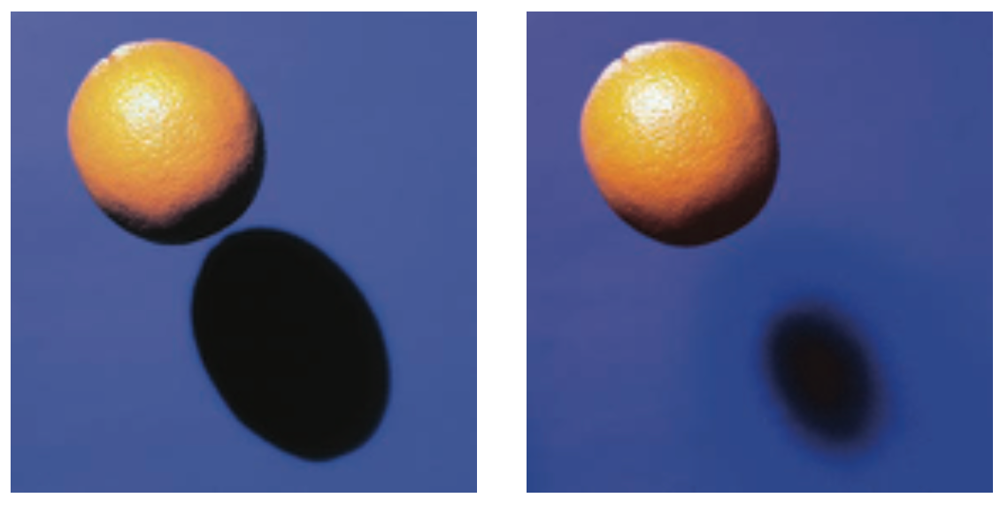
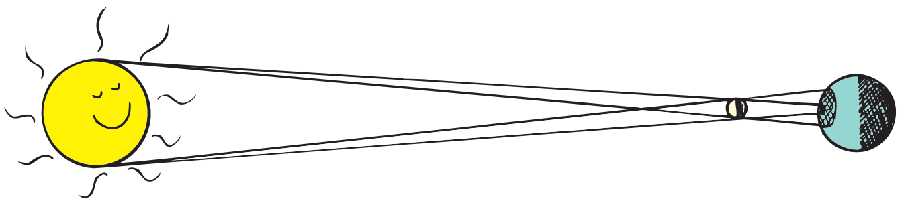

26.5 Opaque Materials
Most things around us are opaque—they absorb light without reemitting it. Books, desks, chairs, and people are opaque. Vibrations given by light to their atoms and molecules are turned into random kinetic energy—into internal energy. These materials become slightly warmer.
Metals are opaque. Because the outer electrons of atoms in metals are not bound to any particular atom, they are free to wander with very little restraint throughout the material (which is why metal conducts electricity and heat so well). When light shines on metal and sets these free electrons into vibration, their energy does not “spring” from atom to atom in the material but, instead, is reflected. That’s why metals are shiny.
Figure 26.11 was omitted because no matching captured image was supplied.
Earth’s atmosphere is transparent to some ultraviolet light, to all visible light, and to some infrared light, but it is opaque to high-frequency ultraviolet light. The small amount of ultraviolet that does get through is responsible for sunburns. If it all got through, we would be fried to a crisp. Clouds are semitransparent to ultraviolet, which is why you can get a sunburn on a cloudy day. Dark skin absorbs ultraviolet before it can penetrate too far, whereas it travels deeper in fair skin. With mild and gradual exposure, fair skin develops a tan and increases its protection against ultraviolet light. Ultraviolet light is also damaging to the eyes—and to tarred roofs. Now you know why tarred roofs are covered with gravel.
Have you noticed that things look darker when they are wet than when they are dry? Light incident on a dry surface bounces directly to your eye, while light incident on a wet surface bounces around inside the transparent wet region before it reaches your eye. What happens with each bounce? Absorption! So more absorption of light occurs in a wet surface, and the surface looks darker.
Shadows
A thin beam of light is often called a ray. When we stand in the sunlight, some of the light is stopped while other rays continue in a straight-line path. We cast a shadow—a region where light rays do not reach. If you are close to your own shadow, the outline of your shadow is sharp because the Sun is so far away. Either a large, far-away light source or a small, nearby light source will produce a sharp shadow. A large, nearby light source produces a somewhat blurry shadow (Figure 26.12). There is usually a dark part on the inside and a lighter part around the edges of a shadow. A total shadow is called an umbra, and a partial shadow is called a penumbra. A penumbra appears where some of the light is blocked but other light fills in (Figure 26.13). A penumbra also occurs where light from a broad source is only partially blocked.


Both Earth and the Moon cast shadows when sunlight is incident on them. When the path of either of these bodies crosses into the shadow cast by the other, an eclipse occurs (Figure 26.14). A dramatic example of the umbra and penumbra occurs when the shadow of the Moon falls on Earth during a solar eclipse. Because of the large size of the Sun, the rays taper to provide an umbra and a surrounding penumbra (Figure 26.15). If you stand in the umbra part of the shadow, you experience darkness during the day—a total eclipse. If you stand in the penumbra, you experience a partial eclipse and you see a crescent of the Sun (recall the photos of partial-eclipse crescents in Chapter 1, and recall the opening photo in this chapter of a solar eclipse as viewed from the space station MIR). During a lunar eclipse, the Moon passes into the shadow of Earth.

